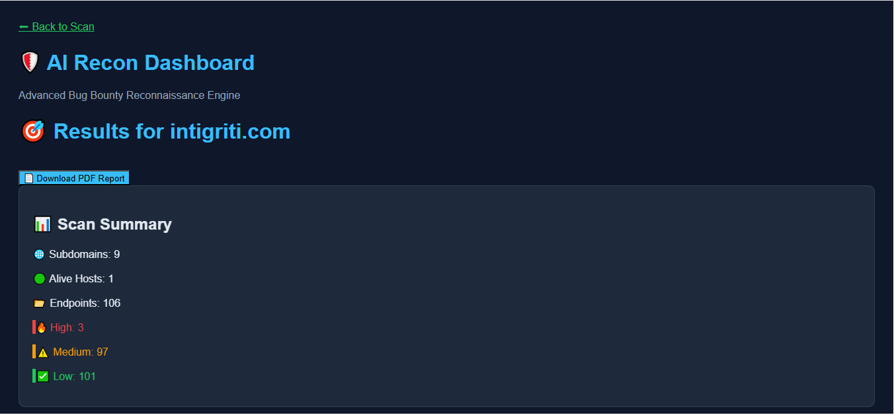
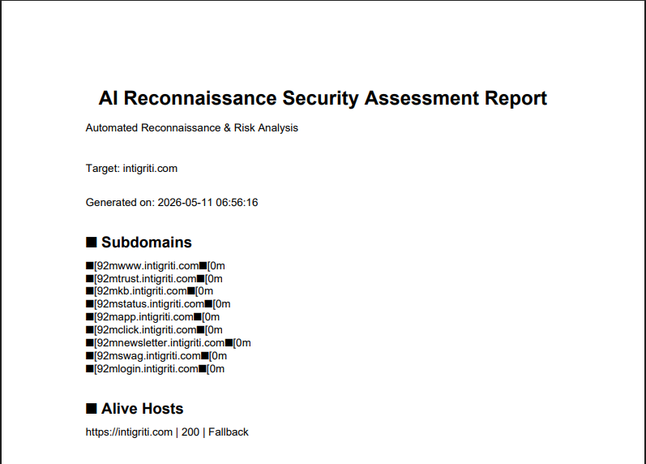
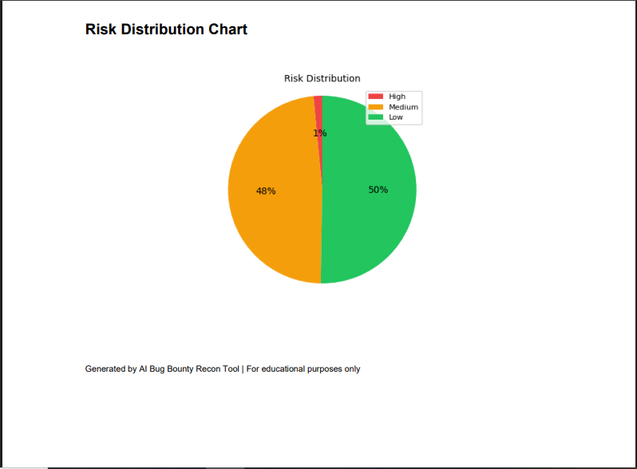

Featured Project

AI-Powered Offensive Security Platform
AI Bug Bounty Recon & Vulnerability Scanner
Advanced reconnaissance and vulnerability assessment platform built for automated bug bounty workflows and web application testing.
• Subdomain Enumeration
• Endpoint Discovery
• Live Host Detection
• Multi-threaded Fuzzing
• SQLi & XSS Detection
• PDF Risk Reporting


